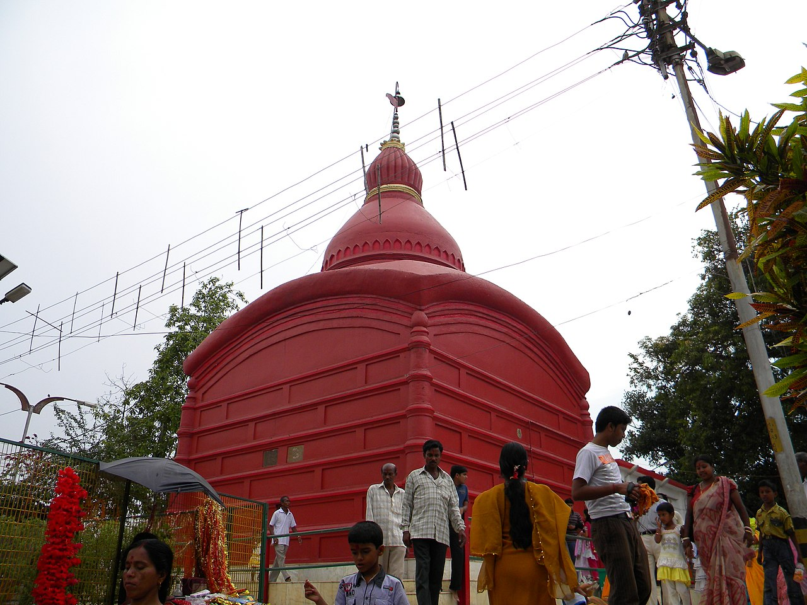

Tripura (/ˈtrɪpʊrə, -ərə/)[11] is a state in northeastern India. The third-smallest state in the country, it
covers 10,491 km2 (4,051 sq mi); and the seventh-least populous state with a population of 3.67 million. It
is bordered by Assam and Mizoram to the east and by Bangladesh to the north, south and west. Tripura is
divided into 8 districts and 23 sub-divisions, where Agartala is the capital and the largest city in the state.
Tripura has 19 different tribal communities with a majority Bengali population. Bengali, English and
Kokborok are the state's official languages.
